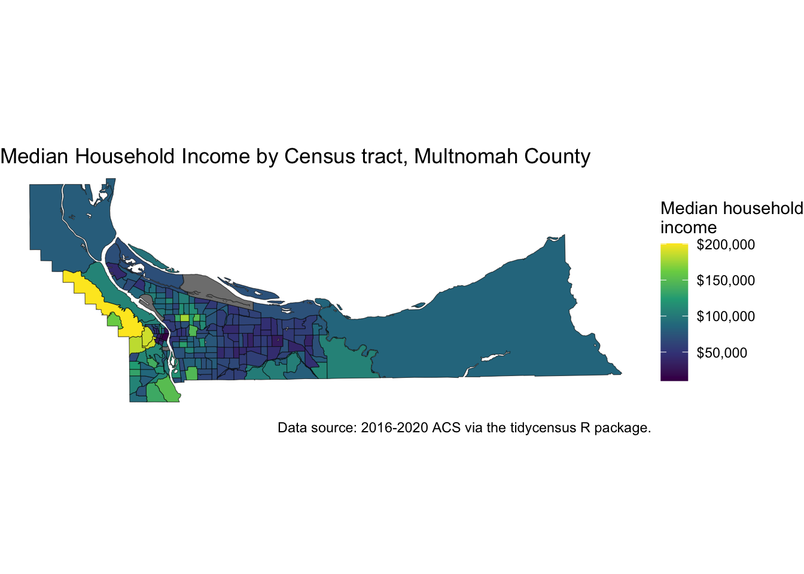

In this section you can see the culmination of all that I have learned in this class. I perform a case study on demographic change in Multnomah county, where I grew up. There are this many people in multnomah county
library(tidycensus)library(tidyverse)
── Attaching core tidyverse packages ──────────────────────── tidyverse 2.0.0 ──
✔ dplyr 1.2.1 ✔ readr 2.2.0
✔ forcats 1.0.1 ✔ stringr 1.6.0
✔ ggplot2 4.0.2 ✔ tibble 3.3.1
✔ lubridate 1.9.5 ✔ tidyr 1.3.2
✔ purrr 1.2.1
── Conflicts ────────────────────────────────────────── tidyverse_conflicts() ──
✖ dplyr::filter() masks stats::filter()
✖ dplyr::lag() masks stats::lag()
ℹ Use the conflicted package (<http://conflicted.r-lib.org/>) to force all conflicts to become errors
library(readr)library(ggplot2)library(scales)
Attaching package: 'scales'
The following object is masked from 'package:purrr':
discard
The following object is masked from 'package:readr':
col_factor
Your original .Renviron will be backed up and stored in your R HOME directory if needed.
Your API key has been stored in your .Renviron and can be accessed by Sys.getenv("CENSUS_API_KEY").
To use now, restart R or run `readRenviron("~/.Renviron")`
[1] "e9fab01c12797a522e0541e2b24496af231563af"
readRenviron("~/.Renviron")multnomah_pep_2016 <-get_estimates(geography ="county",state ="OR",county ="Multnomah",product ="characteristics",breakdown =c("SEX", "AGEGROUP"),breakdown_labels =TRUE,year =2016)multnomah_pep_filtered <- multnomah_pep_2016 %>%filter(str_detect(AGEGROUP, "^Age"), SEX !="Both sexes") %>%mutate(value =ifelse(SEX =="Male", -value, value))multnomah_pyramid <-ggplot(multnomah_pep_filtered,aes(x = value,y = AGEGROUP,fill = SEX)) +geom_col(width =0.95, alpha =0.75) +theme_minimal(base_family ="Verdana", base_size =12) +scale_x_continuous(labels =~number_format(scale = .001, suffix ="k")(abs(.x)),limits =45000*c(-1,1) ) +scale_y_discrete(labels =~str_remove_all(.x, "Age\\s|\\syears")) +scale_fill_manual(values =c("deeppink", "deepskyblue")) +labs(x ="",y ="2016 Census Bureau\n Population Estimate",title ="Population structure in Multnomah County, OR",fill ="",caption ="Sources: US Census Bureau PEP, tidycensus R package") +theme_minimal(base_family ="Verdana", base_size =12) +theme(plot.title =element_text(hjust =0.5, face ="bold", margin =margin(b =15)),axis.title.y =element_text(margin =margin(r =25, l =10), vjust =0.5),plot.margin =margin(t =20, r =25, b =20, l =25, unit ="pt") )multnomah_pyramid
To enable caching of data, set `options(tigris_use_cache = TRUE)`
in your R script or .Rprofile.
library(ggplot2)library(sf)
Linking to GEOS 3.13.0, GDAL 3.8.5, PROJ 9.5.1; sf_use_s2() is TRUE
library(crsuggest)
Using the EPSG Dataset v10.019, a product of the International Association of Oil & Gas Producers.
Please view the terms of use at https://epsg.org/terms-of-use.html.
library(mapview)library(mapboxapi)
Usage of the Mapbox APIs is governed by the Mapbox Terms of Service.
Please visit https://www.mapbox.com/legal/tos/ for more information.
library(spdep)
Loading required package: spData
To access larger datasets in this package, install the spDataLarge
package with: `install.packages('spDataLarge',
repos='https://nowosad.github.io/drat/', type='source')`
Your original .Renviron will be backed up and stored in your R HOME directory if needed.
Your API key has been stored in your .Renviron and can be accessed by Sys.getenv("CENSUS_API_KEY").
To use now, restart R or run `readRenviron("~/.Renviron")`
Fetching area water data for your dataset's location...
Erasing water area...
If this is slow, try a larger area threshold value.
or_water_erase <-ggplot(or_erase) +geom_sf(aes(fill = estimate)) +scale_fill_viridis_c(labels = scales::label_dollar()) +theme_void() +labs(fill ="Median household\nincome",title ="Median Household Income by Census tract, Multnomah County",caption ="Data source: 2016-2020 ACS via the tidycensus R package.")or_water_erase

# Librarieslibrary(tidycensus)library(tidyverse)library(segregation)library(tigris)library(sf)library(dplyr)library(ggplot2)options(tigris_use_cache =TRUE)multnomah_acs_data <-get_acs(geography ="tract",variables =c(white ="B03002_003",black ="B03002_004",asian ="B03002_006",hispanic ="B03002_012" ),state ="OR",county ="Multnomah",geometry =FALSE, # Dropping geometry here for speed; we'll join it back lateryear =2016)